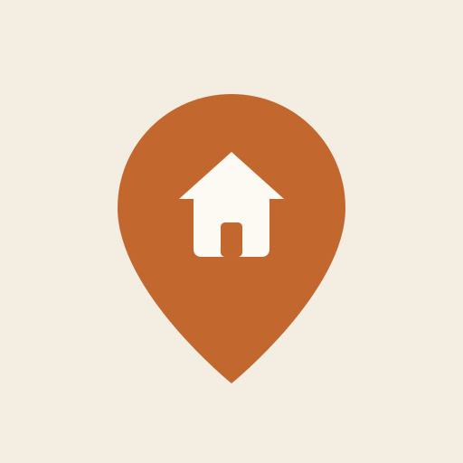

6 opsi di bawah. Tiap kartu nunjukin versi kotak (gaya iOS) & bulat (gaya Android), plus contoh wordmark. Warna ngikut tema baru: krem + terakota.
Opsi 1 — Rumah & Chat
Rumah dengan balon chat. Simbol warga melapor ke RT.
Opsi 2 — Megafon
Megafon/toa di atas krem. Kesan pengumuman & lapor cepat.
Opsi 3 — Perisai Rumah
Perisai berisi rumah. Kesan aman & terpercaya (ronda).
Opsi 4 — Pin Lokasi
Pin lokasi berisi rumah. Identitas lingkungan RT/RW.

Opsi 5 — Monogram LP
Inisial ‘LP’ serif elegan + garis atap rumah.
Opsi 6 — Bubble RT
Balon chat ‘RT’ dengan atap. Ramah & langsung jelas.